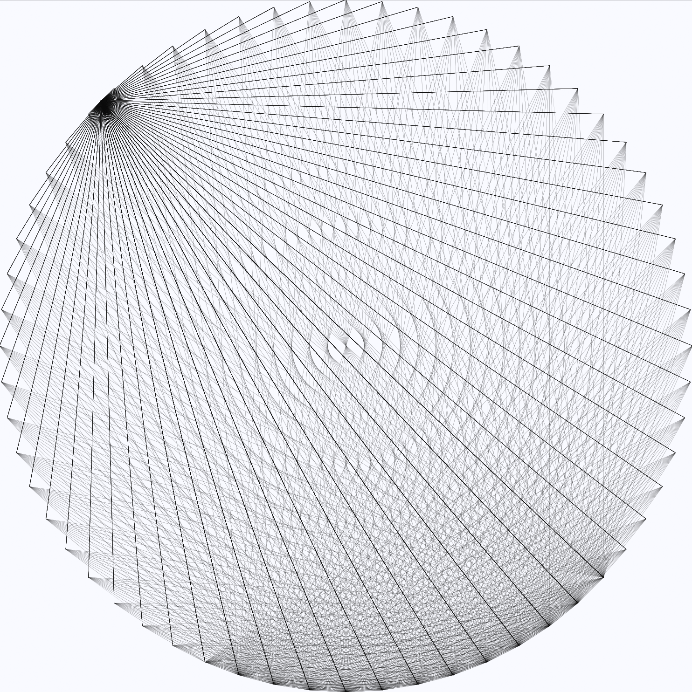
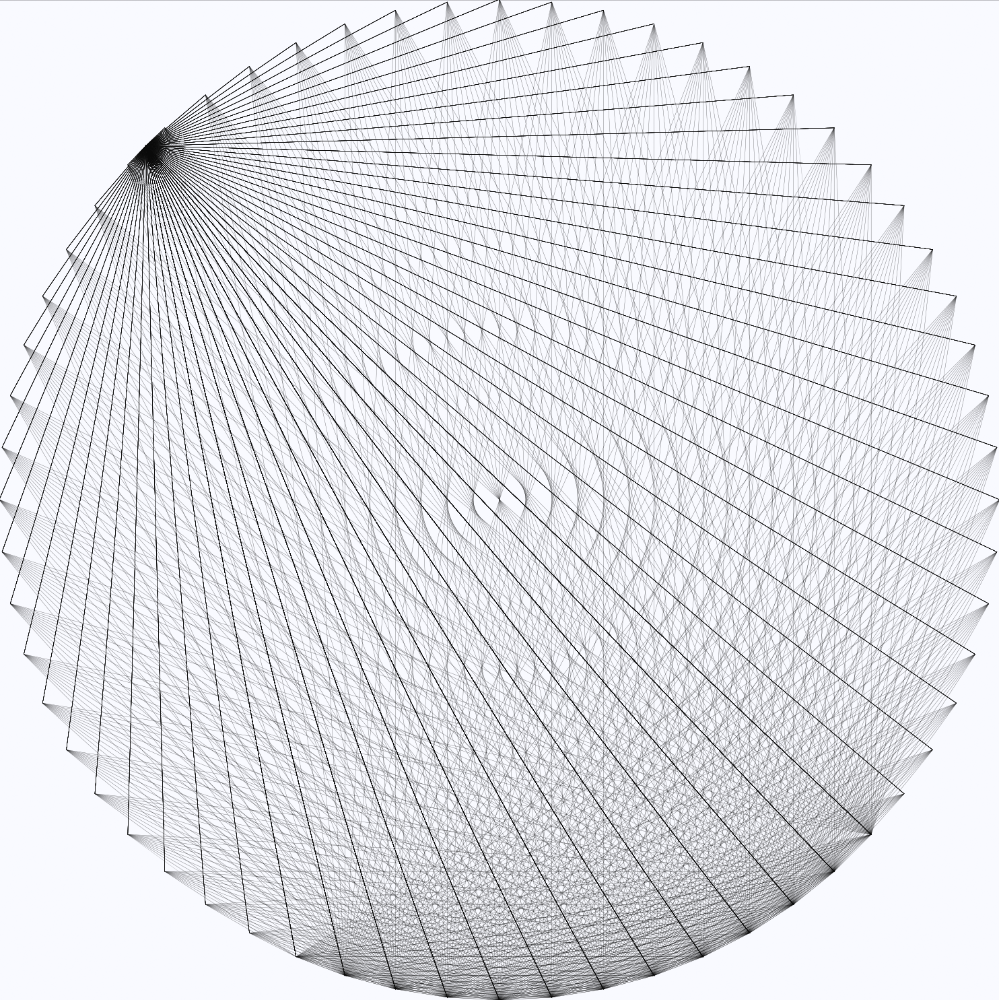
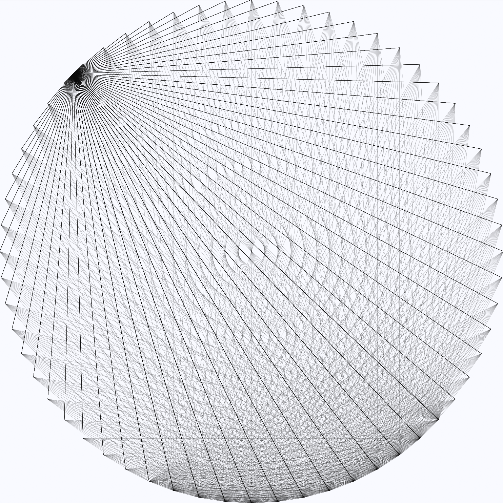

Zeit ist ein essenzieller Bestandteil unseres Lebens. Wir können sie verlieren, tauschen, ihr hinterherjagen oder sie einfach genießen. Doch was passiert, wenn wir die Zeit als einen Datensatz, aus Sekunden, Minuten und Stunden betrachtet? Wie verändert sich unsere Wahrnehmung gegenüber der Zeit? Wie kann man diesen Datensatz visualisieren?
Mit diesen und ähnlichen Fragen beschäftigt sich unser Projekt.
Mithilfe von P5.js haben wir die Uhrzeit auf verschiedene Arten abstrahiert. Bei jedem Laden der Webseite wird eine neue Interpretation gezeigt. Vielleicht errätst du, wie die Zeit codiert wird. Wir wünschen viel Spaß beim Entschlüsseln! Manchmal lohnt es sich auch, ein bisschen zu warten.
Dieses Projekt von Pascal Struck und Jendrik Bradaczek entstand unter Anleitung von Prof. Boris Müller an der Fachhochschule Potsdam im Wintersemester 20/21. Weitere Informationen finden sich in unserem git repository.
